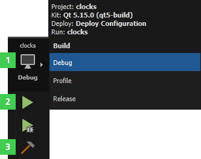

Building for Multiple Platforms
You can build applications for multiple target platforms, or using different compilers, debuggers or Qt versions. Kits define the tools, device type and other settings to use.
By default, when you run the application, you automatically build and deploy it first. However, you can also perform each operation separately.
To check that the application code can be compiled and linked for a device, you can build the project. The build errors and warnings are displayed in the Issues output pane. More detailed information is displayed in the Compile Output pane.
To build an application:
- Click the Build and Run Kit Selector icon (1) or select Build > Open Build and Run Kit Selector to select the build and run kit or an Android device.

- Choose Build > Build Project or press Ctrl+B.
You can also select the Run button (2) to also deploy and run the application after building it.
While the application is being built, the Build button (3) changes to a Cancel Build button. To cancel the build, select the button, press Alt+Backspace, or select Build > Cancel Build. If you selected a build command and decide you would also like to run the application, you can select the Run button to schedule running the project after building is done.
For more information on the options you have, see Specifying Build Settings.
Additional Build Commands
The Build menu contains additional commands for building, rebuilding, and cleaning projects.
To build the current project in all its configurations, that is, for all build configurations in all enabled kits, select Build Project for All Configurations.
To build all open projects, select Build All Projects. If building one application fails, Qt Creator displays an error message and continues building the other applications.
To build all open projects in all their configurations, select Build All Projects for All Configurations.
To quickly check the compile output for changes that you made in one file or subproject, you can use the Build menu commands to build a file or subproject. The available build menu commands depend on the build system you selected for the project: CMake, qmake, or Qbs.
Select Build for Run Configuration to build the executable that corresponds to the selected run configuration. You can also use the cm filter in the locator.
To remove all build artifacts, select one of Clean menu commands.
To clean the build directory and then build the project, select one of Rebuild menu commands.
To build and clean projects without dependencies, select the Build Without Dependencies, Rebuild Without Dependencies, and Clean Without Dependencies options in the context menu in the Projects view.
To run qmake or CMake to regenerate build system files, select Build > Run qmake or Run CMake.
Building with CMake
Qt Creator automatically runs CMake when you make changes to CMakeLists.txt files. To disable this feature, select Tools > Options > Kits > CMake. Select the CMake executable to edit, and then deselect the Autorun CMake check box.
For more information, see Setting Up CMake.
Building with qmake
To prevent failures on incremental builds, it might make sense to always run qmake before building, even though it means that building will take more time. To enable this option, select Tools > Options > Build & Run > qmake > Run qmake on every build.